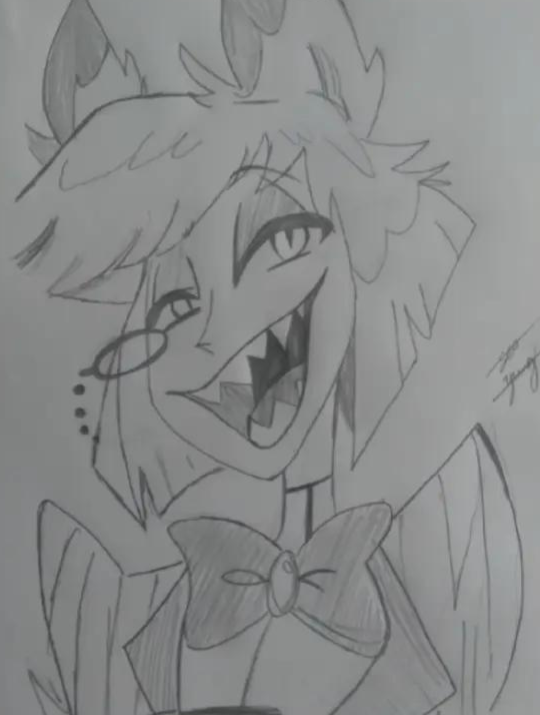

🍪 🎀 𝑀𝐸𝒰𝒮 𝐻❀𝐵𝐵𝐼𝐸𝒮 🎀 🍪

🐁 🎀 𝑀𝐸𝒰𝒮 𝒟𝐸𝒮𝐸𝒩𝐻💗𝒮 🎀 🐁
𝐃𝐞𝐬𝐞𝐧𝐡𝐚𝐫 é 𝐦𝐚𝐢𝐬 𝐝𝐨 𝐪𝐮𝐞 𝐮𝐦𝐚 𝐬𝐢𝐦𝐩𝐥𝐞𝐬 𝐚𝐭𝐢𝐯𝐢𝐝𝐚𝐝𝐞; é 𝐮𝐦𝐚 𝐟𝐨𝐫𝐦𝐚 𝐝𝐞 𝐬𝐞 𝐜𝐨𝐧𝐞𝐜𝐭𝐚𝐫 𝐜𝐨𝐦 𝐚 𝐩𝐫ó𝐩𝐫𝐢𝐚 𝐢𝐦𝐚𝐠𝐢𝐧𝐚çã𝐨. 𝐏𝐚𝐫𝐚 𝐪𝐮𝐞𝐦 𝐩𝐫𝐚𝐭𝐢𝐜𝐚 𝐞𝐬𝐬𝐞 𝐡𝐨𝐛𝐛𝐲, 𝐨 𝐩𝐚𝐩𝐞𝐥 𝐬𝐞 𝐭𝐨𝐫𝐧𝐚 𝐮𝐦 𝐞𝐬𝐩𝐚ç𝐨 𝐨𝐧𝐝𝐞 𝐢𝐝𝐞𝐢𝐚𝐬 𝐠𝐚𝐧𝐡𝐚𝐦 𝐟𝐨𝐫𝐦𝐚, 𝐬𝐞𝐧𝐭𝐢𝐦𝐞𝐧𝐭𝐨𝐬 𝐬ã𝐨 𝐭𝐫𝐚𝐝𝐮𝐳𝐢𝐝𝐨𝐬 𝐞𝐦 𝐥𝐢𝐧𝐡𝐚𝐬 𝐞 𝐜𝐨𝐫𝐞𝐬, 𝐞 𝐨 𝐦𝐮𝐧𝐝𝐨 𝐚𝐨 𝐫𝐞𝐝𝐨𝐫 𝐩𝐨𝐝𝐞 𝐬𝐞𝐫 𝐫𝐞𝐢𝐧𝐭𝐞𝐫𝐩𝐫𝐞𝐭𝐚𝐝𝐨 𝐝𝐞 𝐢𝐧𝐟𝐢𝐧𝐢𝐭𝐚𝐬 𝐦𝐚𝐧𝐞𝐢𝐫𝐚𝐬. É 𝐧𝐨 𝐝𝐞𝐬𝐞𝐧𝐡𝐨 𝐪𝐮𝐞 𝐦𝐮𝐢𝐭𝐚𝐬 𝐩𝐞𝐬𝐬𝐨𝐚𝐬 𝐞𝐧𝐜𝐨𝐧𝐭𝐫𝐚𝐦 𝐮𝐦𝐚 𝐞𝐬𝐩é𝐜𝐢𝐞 𝐝𝐞 𝐫𝐞𝐟ú𝐠𝐢𝐨, 𝐮𝐦 𝐦𝐨𝐦𝐞𝐧𝐭𝐨 𝐝𝐞 𝐢𝐧𝐭𝐫𝐨𝐬𝐩𝐞𝐜çã𝐨 𝐨𝐧𝐝𝐞, 𝐩𝐨𝐫 𝐚𝐥𝐠𝐮𝐦𝐚𝐬 𝐡𝐨𝐫𝐚𝐬, 𝐨 𝐜𝐨𝐭𝐢𝐝𝐢𝐚𝐧𝐨 𝐟𝐢𝐜𝐚 𝐞𝐦 𝐬𝐞𝐠𝐮𝐧𝐝𝐨 𝐩𝐥𝐚𝐧𝐨. 𝐎 𝐬𝐢𝐦𝐩𝐥𝐞𝐬 𝐚𝐭𝐨 𝐝𝐞 𝐩𝐞𝐠𝐚𝐫 𝐮𝐦 𝐥á𝐩𝐢𝐬 𝐞 𝐜𝐨𝐦𝐞ç𝐚𝐫 𝐚 𝐭𝐫𝐚ç𝐚𝐫 𝐟𝐨𝐫𝐦𝐚𝐬 𝐨𝐟𝐞𝐫𝐞𝐜𝐞 𝐮𝐦𝐚 𝐬𝐞𝐧𝐬𝐚çã𝐨 𝐝𝐞 𝐥𝐢𝐛𝐞𝐫𝐝𝐚𝐝𝐞, 𝐩𝐞𝐫𝐦𝐢𝐭𝐢𝐧𝐝𝐨 𝐪𝐮𝐞 𝐚 𝐦𝐞𝐧𝐭𝐞 𝐬𝐞 𝐝𝐞𝐬𝐜𝐨𝐧𝐞𝐜𝐭𝐞 𝐝𝐚𝐬 𝐩𝐫𝐞𝐨𝐜𝐮𝐩𝐚çõ𝐞𝐬 𝐞 𝐬𝐞 𝐜𝐨𝐧𝐜𝐞𝐧𝐭𝐫𝐞 𝐚𝐩𝐞𝐧𝐚𝐬 𝐧𝐚 𝐚𝐫𝐭𝐞 𝐝𝐞 𝐜𝐫𝐢𝐚𝐫. 𝐍ã𝐨 𝐢𝐦𝐩𝐨𝐫𝐭𝐚 𝐬𝐞 𝐨 𝐝𝐞𝐬𝐞𝐧𝐡𝐨 é 𝐫𝐞𝐚𝐥𝐢𝐬𝐭𝐚, 𝐚𝐛𝐬𝐭𝐫𝐚𝐭𝐨, 𝐨𝐮 𝐚𝐭é 𝐦𝐞𝐬𝐦𝐨 𝐮𝐦𝐚 𝐦𝐢𝐬𝐭𝐮𝐫𝐚 𝐝𝐞 𝐞𝐬𝐭𝐢𝐥𝐨𝐬 𝐨 𝐪𝐮𝐞 𝐢𝐦𝐩𝐨𝐫𝐭𝐚 é 𝐨 𝐩𝐫𝐚𝐳𝐞𝐫 𝐝𝐨 𝐩𝐫𝐨𝐜𝐞𝐬𝐬𝐨. 𝐎 𝐡𝐨𝐛𝐛𝐲 𝐝𝐞 𝐝𝐞𝐬𝐞𝐧𝐡𝐚𝐫 𝐭𝐫𝐚𝐳 𝐜𝐨𝐧𝐬𝐢𝐠𝐨 𝐮𝐦 𝐬𝐞𝐧𝐬𝐨 𝐝𝐞 𝐝𝐞𝐬𝐜𝐨𝐛𝐞𝐫𝐭𝐚 𝐜𝐨𝐧𝐬𝐭𝐚𝐧𝐭𝐞. 𝐂𝐚𝐝𝐚 𝐞𝐬𝐛𝐨ç𝐨, 𝐜𝐚𝐝𝐚 𝐥𝐢𝐧𝐡𝐚, é 𝐮𝐦𝐚 𝐨𝐩𝐨𝐫𝐭𝐮𝐧𝐢𝐝𝐚𝐝𝐞 𝐝𝐞 𝐚𝐩𝐫𝐞𝐧𝐝𝐢𝐳𝐚𝐝𝐨, 𝐝𝐞 𝐦𝐞𝐥𝐡𝐨𝐫𝐚𝐫 𝐚 𝐭é𝐜𝐧𝐢𝐜𝐚 𝐨𝐮 𝐝𝐞 𝐞𝐱𝐩𝐥𝐨𝐫𝐚𝐫 𝐧𝐨𝐯𝐨𝐬 𝐞𝐬𝐭𝐢𝐥𝐨𝐬. 𝐀𝐥é𝐦 𝐝𝐢𝐬𝐬𝐨, 𝐝𝐞𝐬𝐞𝐧𝐡𝐚𝐫 é 𝐮𝐦𝐚 𝐦𝐚𝐧𝐞𝐢𝐫𝐚 𝐦𝐚𝐫𝐚𝐯𝐢𝐥𝐡𝐨𝐬𝐚 𝐝𝐞 𝐞𝐱𝐩𝐫𝐞𝐬𝐬𝐚𝐫 𝐞𝐦𝐨çõ𝐞𝐬 𝐪𝐮𝐞 𝐧𝐞𝐦 𝐬𝐞𝐦𝐩𝐫𝐞 𝐩𝐨𝐝𝐞𝐦 𝐬𝐞𝐫 𝐝𝐢𝐭𝐚𝐬 𝐞𝐦 𝐩𝐚𝐥𝐚𝐯𝐫𝐚𝐬. 𝐌𝐮𝐢𝐭𝐚𝐬 𝐯𝐞𝐳𝐞𝐬, 𝐮𝐦 𝐝𝐞𝐬𝐞𝐧𝐡𝐨 𝐟𝐚𝐥𝐚 𝐦𝐚𝐢𝐬 𝐝𝐨 𝐪𝐮𝐞 𝐪𝐮𝐚𝐥𝐪𝐮𝐞𝐫 𝐜𝐨𝐧𝐯𝐞𝐫𝐬𝐚, 𝐫𝐞𝐯𝐞𝐥𝐚𝐧𝐝𝐨 𝐬𝐞𝐧𝐭𝐢𝐦𝐞𝐧𝐭𝐨𝐬 𝐩𝐫𝐨𝐟𝐮𝐧𝐝𝐨𝐬 𝐨𝐮 𝐚𝐭é 𝐦𝐞𝐬𝐦𝐨 𝐜𝐚𝐩𝐭𝐮𝐫𝐚𝐧𝐝𝐨 𝐮𝐦𝐚 𝐟𝐫𝐚çã𝐨 𝐝𝐨 𝐪𝐮𝐞 𝐚 𝐦𝐞𝐧𝐭𝐞 𝐭𝐞𝐧𝐭𝐚 𝐞𝐧𝐭𝐞𝐧𝐝𝐞𝐫.𝐄 𝐨 𝐦𝐞𝐥𝐡𝐨𝐫 𝐝𝐞 𝐭𝐮𝐝𝐨: 𝐧ã𝐨 𝐡á 𝐩𝐫𝐞𝐬𝐬𝐚. 𝐃𝐞𝐬𝐞𝐧𝐡𝐚𝐫, 𝐜𝐨𝐦𝐨 𝐡𝐨𝐛𝐛𝐲, 𝐨𝐟𝐞𝐫𝐞𝐜𝐞 𝐚 𝐨𝐩𝐨𝐫𝐭𝐮𝐧𝐢𝐝𝐚𝐝𝐞 𝐝𝐞 𝐬𝐞 𝐞𝐧𝐭𝐫𝐞𝐠𝐚𝐫 𝐚𝐨 𝐩𝐫𝐨𝐜𝐞𝐬𝐬𝐨 𝐜𝐫𝐢𝐚𝐭𝐢𝐯𝐨 𝐬𝐞𝐦 𝐜𝐨𝐛𝐫𝐚𝐧ç𝐚𝐬. 𝐂𝐚𝐝𝐚 𝐝𝐞𝐬𝐞𝐧𝐡𝐨 é 𝐮𝐦 𝐫𝐞𝐟𝐥𝐞𝐱𝐨 𝐝𝐞 𝐪𝐮𝐞𝐦 𝐨 𝐟𝐚𝐳 𝐬𝐞𝐦 𝐩𝐫𝐞𝐬𝐬õ𝐞𝐬, 𝐚𝐩𝐞𝐧𝐚𝐬 𝐚 𝐚𝐫𝐭𝐞 𝐟𝐥𝐮𝐢𝐧𝐝𝐨 𝐥𝐢𝐯𝐫𝐞𝐦𝐞𝐧𝐭𝐞.
°* 🎀 𝑀𝐼𝒩𝐻𝒜𝒮 𝑀𝒰𝒮𝐼𝒞𝒜𝒮 🎀 *°
𝐎𝐮𝐯𝐢𝐫 𝐦ú𝐬𝐢𝐜𝐚 é 𝐦𝐚𝐢𝐬 𝐝𝐨 𝐪𝐮𝐞 𝐮𝐦 𝐩𝐚𝐬𝐬𝐚𝐭𝐞𝐦𝐩𝐨 é 𝐮𝐦 𝐝𝐨𝐬 𝐡𝐨𝐛𝐛𝐢𝐞𝐬 𝐦𝐚𝐢𝐬 𝐬𝐢𝐧𝐜𝐞𝐫𝐨𝐬 𝐞 𝐞𝐦𝐨𝐜𝐢𝐨𝐧𝐚𝐧𝐭𝐞𝐬 𝐪𝐮𝐞 𝐞𝐱𝐢𝐬𝐭𝐞𝐦. É 𝐢𝐧𝐜𝐫í𝐯𝐞𝐥 𝐜𝐨𝐦𝐨 𝐚𝐥𝐠𝐮𝐦𝐚𝐬 𝐦𝐞𝐥𝐨𝐝𝐢𝐚𝐬 𝐭ê𝐦 𝐨 𝐩𝐨𝐝𝐞𝐫 𝐝𝐞 𝐦𝐮𝐝𝐚𝐫 𝐨 𝐡𝐮𝐦𝐨𝐫, 𝐝𝐞𝐬𝐩𝐞𝐫𝐭𝐚𝐫 𝐥𝐞𝐦𝐛𝐫𝐚𝐧ç𝐚𝐬 𝐨𝐮 𝐬𝐢𝐦𝐩𝐥𝐞𝐬𝐦𝐞𝐧𝐭𝐞 𝐟𝐚𝐳𝐞𝐫 𝐨 𝐜𝐨𝐫𝐚çã𝐨 𝐛𝐚𝐭𝐞𝐫 𝐦𝐚𝐢𝐬 𝐟𝐨𝐫𝐭𝐞. 𝐁𝐚𝐬𝐭𝐚 𝐚𝐩𝐞𝐫𝐭𝐚𝐫 𝐨 𝐩𝐥𝐚𝐲 𝐞, 𝐝𝐞 𝐫𝐞𝐩𝐞𝐧𝐭𝐞, 𝐭𝐮𝐝𝐨 à 𝐧𝐨𝐬𝐬𝐚 𝐯𝐨𝐥𝐭𝐚 𝐩𝐚𝐫𝐞𝐜𝐞 𝐝𝐢𝐟𝐞𝐫𝐞𝐧𝐭𝐞. 𝐀 𝐦ú𝐬𝐢𝐜𝐚 𝐚𝐜𝐨𝐦𝐩𝐚𝐧𝐡𝐚 𝐨𝐬 𝐦𝐨𝐦𝐞𝐧𝐭𝐨𝐬 𝐝𝐨 𝐝𝐢𝐚 𝐚 𝐝𝐢𝐚: 𝐞𝐬𝐭á 𝐩𝐫𝐞𝐬𝐞𝐧𝐭𝐞 𝐧𝐚𝐬 𝐦𝐚𝐧𝐡ã𝐬 𝐩𝐫𝐞𝐠𝐮𝐢ç𝐨𝐬𝐚𝐬, 𝐧𝐚𝐬 𝐭𝐚𝐫𝐝𝐞𝐬 𝐜𝐡𝐞𝐢𝐚𝐬 𝐝𝐞 𝐞𝐧𝐞𝐫𝐠𝐢𝐚, 𝐧𝐚𝐬 𝐧𝐨𝐢𝐭𝐞𝐬 𝐫𝐞𝐟𝐥𝐞𝐱𝐢𝐯𝐚𝐬. À𝐬 𝐯𝐞𝐳𝐞𝐬, 𝐞𝐥𝐚 𝐞𝐦𝐛𝐚𝐥𝐚 𝐚𝐥𝐞𝐠𝐫𝐢𝐚𝐬, 𝐨𝐮𝐭𝐫𝐚𝐬 𝐯𝐞𝐳𝐞𝐬 𝐜𝐨𝐧𝐟𝐨𝐫𝐭𝐚 𝐧𝐚𝐬 𝐭𝐫𝐢𝐬𝐭𝐞𝐳𝐚𝐬. 𝐄 𝐨 𝐦𝐚𝐢𝐬 𝐦á𝐠𝐢𝐜𝐨 é 𝐪𝐮𝐞 𝐬𝐞𝐦𝐩𝐫𝐞 𝐞𝐱𝐢𝐬𝐭𝐞 𝐮𝐦𝐚 𝐦ú𝐬𝐢𝐜𝐚 𝐜𝐞𝐫𝐭𝐚 𝐩𝐚𝐫𝐚 𝐜𝐚𝐝𝐚 𝐦𝐨𝐦𝐞𝐧𝐭𝐨, 𝐜𝐨𝐦𝐨 𝐬𝐞 𝐞𝐥𝐚 𝐞𝐧𝐭𝐞𝐧𝐝𝐞𝐬𝐬𝐞 𝐞𝐱𝐚𝐭𝐚𝐦𝐞𝐧𝐭𝐞 𝐨 𝐪𝐮𝐞 𝐚 𝐠𝐞𝐧𝐭𝐞 𝐞𝐬𝐭á 𝐬𝐞𝐧𝐭𝐢𝐧𝐝𝐨. 𝐐𝐮𝐞𝐦 𝐭𝐞𝐦 𝐨 𝐡á𝐛𝐢𝐭𝐨 𝐝𝐞 𝐨𝐮𝐯𝐢𝐫 𝐦ú𝐬𝐢𝐜𝐚 𝐜𝐚𝐫𝐫𝐞𝐠𝐚 𝐜𝐨𝐧𝐬𝐢𝐠𝐨 𝐮𝐦𝐚 𝐭𝐫𝐢𝐥𝐡𝐚 𝐬𝐨𝐧𝐨𝐫𝐚 𝐩𝐞𝐬𝐬𝐨𝐚𝐥. 𝐂𝐚𝐝𝐚 𝐬𝐨𝐦 𝐟𝐚𝐯𝐨𝐫𝐢𝐭𝐨 𝐭𝐞𝐦 𝐮𝐦𝐚 𝐡𝐢𝐬𝐭ó𝐫𝐢𝐚 𝐩𝐨𝐫 𝐭𝐫á𝐬 𝐮𝐦𝐚 𝐥𝐞𝐦𝐛𝐫𝐚𝐧ç𝐚, 𝐮𝐦𝐚 𝐟𝐚𝐬𝐞, 𝐮𝐦𝐚 𝐩𝐞𝐬𝐬𝐨𝐚. 𝐄 𝐪𝐮𝐚𝐧𝐝𝐨 𝐚 𝐠𝐞𝐧𝐭𝐞 𝐨𝐮𝐯𝐞 𝐝𝐞 𝐧𝐨𝐯𝐨, é 𝐜𝐨𝐦𝐨 𝐯𝐢𝐚𝐣𝐚𝐫 𝐧𝐨 𝐭𝐞𝐦𝐩𝐨, 𝐫𝐞𝐯𝐢𝐯𝐞𝐧𝐝𝐨 𝐭𝐮𝐝𝐨 𝐚𝐪𝐮𝐢𝐥𝐨 𝐞𝐦 𝐬𝐞𝐠𝐮𝐧𝐝𝐨𝐬. 𝐌𝐚𝐢𝐬 𝐝𝐨 𝐪𝐮𝐞 𝐬𝐨𝐧𝐬, 𝐨𝐮𝐯𝐢𝐫 𝐦ú𝐬𝐢𝐜𝐚 é 𝐬𝐞𝐧𝐭𝐢𝐫. É 𝐟𝐞𝐜𝐡𝐚𝐫 𝐨𝐬 𝐨𝐥𝐡𝐨𝐬 𝐞 𝐝𝐞𝐢𝐱𝐚𝐫 𝐚 𝐦𝐞𝐥𝐨𝐝𝐢𝐚 𝐥𝐞𝐯𝐚𝐫 𝐚 𝐦𝐞𝐧𝐭𝐞 𝐩𝐚𝐫𝐚 𝐥𝐨𝐧𝐠𝐞, 𝐜𝐨𝐦𝐨 𝐬𝐞 𝐟𝐨𝐬𝐬𝐞 𝐮𝐦𝐚 𝐟𝐨𝐫𝐦𝐚 𝐝𝐞 𝐞𝐬𝐜𝐚𝐩𝐚𝐫 𝐮𝐦 𝐩𝐨𝐮𝐜𝐨 𝐝𝐨 𝐦𝐮𝐧𝐝𝐨 𝐞 𝐦𝐞𝐫𝐠𝐮𝐥𝐡𝐚𝐫 𝐝𝐞𝐧𝐭𝐫𝐨 𝐝𝐞 𝐬𝐢. É 𝐭𝐚𝐦𝐛é𝐦 𝐮𝐦𝐚 𝐦𝐚𝐧𝐞𝐢𝐫𝐚 𝐝𝐞 𝐬𝐞 𝐜𝐨𝐧𝐞𝐜𝐭𝐚𝐫 𝐜𝐨𝐦 𝐨𝐮𝐭𝐫𝐚𝐬 𝐜𝐮𝐥𝐭𝐮𝐫𝐚𝐬, 𝐨𝐮𝐭𝐫𝐚𝐬 𝐫𝐞𝐚𝐥𝐢𝐝𝐚𝐝𝐞𝐬 𝐞, 𝐩𝐫𝐢𝐧𝐜𝐢𝐩𝐚𝐥𝐦𝐞𝐧𝐭𝐞, 𝐜𝐨𝐦 𝐪𝐮𝐞𝐦 𝐬𝐨𝐦𝐨𝐬 𝐩𝐨𝐫 𝐝𝐞𝐧𝐭𝐫𝐨. 𝐍𝐨 𝐟𝐨𝐧𝐞 𝐝𝐞 𝐨𝐮𝐯𝐢𝐝𝐨 𝐨𝐮 𝐚𝐥𝐭𝐨-𝐟𝐚𝐥𝐚𝐧𝐭𝐞, 𝐧𝐨 𝐬𝐢𝐥ê𝐧𝐜𝐢𝐨 𝐝𝐨 𝐪𝐮𝐚𝐫𝐭𝐨 𝐨𝐮 𝐧𝐨 𝐜𝐚𝐦𝐢𝐧𝐡𝐨 𝐩𝐚𝐫𝐚 𝐚𝐥𝐠𝐮𝐦 𝐥𝐮𝐠𝐚𝐫, 𝐚 𝐦ú𝐬𝐢𝐜𝐚 é 𝐜𝐨𝐦𝐩𝐚𝐧𝐡𝐢𝐚, 𝐢𝐧𝐬𝐩𝐢𝐫𝐚çã𝐨 𝐞 𝐚𝐛𝐫𝐢𝐠𝐨. 𝐔𝐦 𝐡𝐨𝐛𝐛𝐲 𝐬𝐢𝐦𝐩𝐥𝐞𝐬, 𝐦𝐚𝐬 𝐜𝐨𝐦 𝐮𝐦 𝐩𝐨𝐝𝐞𝐫 𝐢𝐦𝐞𝐧𝐬𝐨 𝐝𝐞 𝐭𝐫𝐚𝐧𝐬𝐟𝐨𝐫𝐦𝐚𝐫 𝐪𝐮𝐚𝐥𝐪𝐮𝐞𝐫 𝐦𝐨𝐦𝐞𝐧𝐭𝐨.
✧ 🎀 𝒜𝒫𝑅𝐸𝒩𝒟𝐸𝑅 𝐼𝒟𝐼❀𝑀𝒜𝒮 🎀 ✧
𝐀𝐩𝐫𝐞𝐧𝐝𝐞𝐫 𝐨 𝐢𝐝𝐢𝐨𝐦𝐚 𝐜𝐨𝐫𝐞𝐚𝐧𝐨 é 𝐦𝐚𝐢𝐬 𝐝𝐨 𝐪𝐮𝐞 𝐚𝐝𝐪𝐮𝐢𝐫𝐢𝐫 𝐧𝐨𝐯𝐚𝐬 𝐩𝐚𝐥𝐚𝐯𝐫𝐚𝐬 𝐨𝐮 𝐞𝐧𝐭𝐞𝐧𝐝𝐞𝐫 𝐫𝐞𝐠𝐫𝐚𝐬 𝐠𝐫𝐚𝐦𝐚𝐭𝐢𝐜𝐚𝐢𝐬 é 𝐮𝐦𝐚 𝐩𝐨𝐫𝐭𝐚 𝐚𝐛𝐞𝐫𝐭𝐚 𝐩𝐚𝐫𝐚 𝐮𝐦𝐚 𝐜𝐮𝐥𝐭𝐮𝐫𝐚 𝐟𝐚𝐬𝐜𝐢𝐧𝐚𝐧𝐭𝐞 𝐞 𝐮𝐦𝐚 𝐟𝐨𝐫𝐦𝐚 ú𝐧𝐢𝐜𝐚 𝐝𝐞 𝐯𝐞𝐫 𝐨 𝐦𝐮𝐧𝐝𝐨. 𝐄𝐬𝐬𝐞 𝐡𝐨𝐛𝐛𝐲 𝐧ã𝐨 𝐬ó 𝐞𝐧𝐯𝐨𝐥𝐯𝐞 𝐨 𝐚𝐩𝐫𝐞𝐧𝐝𝐢𝐳𝐚𝐝𝐨 𝐝𝐞 𝐮𝐦 𝐧𝐨𝐯𝐨 𝐬𝐢𝐬𝐭𝐞𝐦𝐚 𝐥𝐢𝐧𝐠𝐮í𝐬𝐭𝐢𝐜𝐨, 𝐦𝐚𝐬 𝐭𝐚𝐦𝐛é𝐦 é 𝐮𝐦𝐚 𝐢𝐦𝐞𝐫𝐬ã𝐨 𝐧𝐚 𝐡𝐢𝐬𝐭ó𝐫𝐢𝐚, 𝐧𝐚 𝐦ú𝐬𝐢𝐜𝐚, 𝐧𝐚𝐬 𝐭𝐫𝐚𝐝𝐢çõ𝐞𝐬 𝐞 𝐧𝐚 𝐜𝐮𝐥𝐢𝐧á𝐫𝐢𝐚 𝐪𝐮𝐞 𝐦𝐨𝐥𝐝𝐚𝐦 𝐚 𝐂𝐨𝐫𝐞𝐢𝐚. 𝐀 𝐣𝐨𝐫𝐧𝐚𝐝𝐚 𝐜𝐨𝐦𝐞ç𝐚 𝐜𝐨𝐦 𝐨 𝐚𝐥𝐟𝐚𝐛𝐞𝐭𝐨, 𝐨 𝐇𝐚𝐧𝐠𝐮𝐥, 𝐬𝐢𝐦𝐩𝐥𝐞𝐬 𝐝𝐞 𝐚𝐩𝐫𝐞𝐧𝐝𝐞𝐫, 𝐦𝐚𝐬 𝐜𝐨𝐦 𝐮𝐦 𝐩𝐨𝐝𝐞𝐫 𝐢𝐦𝐞𝐧𝐬𝐨. 𝐀 𝐜𝐚𝐝𝐚 𝐧𝐨𝐯𝐚 𝐥𝐞𝐭𝐫𝐚 𝐝𝐨𝐦𝐢𝐧𝐚𝐝𝐚, 𝐨 𝐞𝐬𝐭𝐮𝐝𝐚𝐧𝐭𝐞 𝐬𝐞𝐧𝐭𝐞 𝐪𝐮𝐞 𝐞𝐬𝐭á 𝐦𝐚𝐢𝐬 𝐩𝐞𝐫𝐭𝐨 𝐝𝐞 𝐝𝐞𝐜𝐢𝐟𝐫𝐚𝐫 𝐮𝐦𝐚 𝐧𝐨𝐯𝐚 𝐟𝐨𝐫𝐦𝐚 𝐝𝐞 𝐩𝐞𝐧𝐬𝐚𝐫, 𝐝𝐞 𝐞𝐱𝐩𝐫𝐞𝐬𝐬𝐚𝐫 𝐬𝐞𝐧𝐭𝐢𝐦𝐞𝐧𝐭𝐨𝐬 𝐞 𝐢𝐝𝐞𝐢𝐚𝐬. 𝐍ã𝐨 é 𝐬ó 𝐚 𝐥í𝐧𝐠𝐮𝐚 𝐞𝐦 𝐬𝐢 𝐪𝐮𝐞 𝐜𝐚𝐭𝐢𝐯𝐚, 𝐦𝐚𝐬 𝐨 𝐩𝐫𝐚𝐳𝐞𝐫 𝐝𝐞 𝐞𝐧𝐭𝐞𝐧𝐝𝐞𝐫 𝐨 𝐬𝐢𝐠𝐧𝐢𝐟𝐢𝐜𝐚𝐝𝐨 𝐝𝐞 𝐩𝐚𝐥𝐚𝐯𝐫𝐚𝐬 𝐞 𝐞𝐱𝐩𝐫𝐞𝐬𝐬õ𝐞𝐬 𝐪𝐮𝐞, 𝐞𝐦 𝐩𝐨𝐫𝐭𝐮𝐠𝐮ê𝐬, 𝐧ã𝐨 𝐭ê𝐦 𝐮𝐦𝐚 𝐭𝐫𝐚𝐝𝐮çã𝐨 𝐞𝐱𝐚𝐭𝐚. 𝐎 𝐜𝐨𝐫𝐞𝐚𝐧𝐨 𝐭𝐞𝐦 𝐮𝐦𝐚 𝐦𝐮𝐬𝐢𝐜𝐚𝐥𝐢𝐝𝐚𝐝𝐞 ú𝐧𝐢𝐜𝐚, 𝐜𝐨𝐦 𝐭𝐨𝐧𝐬 𝐞 𝐧𝐮𝐚𝐧𝐜𝐞𝐬 𝐪𝐮𝐞 𝐟𝐚𝐳𝐞𝐦 𝐜𝐚𝐝𝐚 𝐟𝐫𝐚𝐬𝐞 𝐬𝐨𝐚𝐫 𝐝𝐞 𝐮𝐦𝐚 𝐦𝐚𝐧𝐞𝐢𝐫𝐚 𝐞𝐬𝐩𝐞𝐜𝐢𝐚𝐥. 𝐀𝐨 𝐚𝐩𝐫𝐞𝐧𝐝𝐞𝐫 𝐜𝐨𝐫𝐞𝐚𝐧𝐨, 𝐯𝐨𝐜ê 𝐜𝐨𝐦𝐞ç𝐚 𝐚 𝐬𝐞 𝐜𝐨𝐧𝐞𝐜𝐭𝐚𝐫 𝐜𝐨𝐦 𝐮𝐦𝐚 𝐜𝐮𝐥𝐭𝐮𝐫𝐚 𝐫𝐢𝐜𝐚 𝐞𝐦 𝐝𝐞𝐭𝐚𝐥𝐡𝐞𝐬. 𝐃𝐞𝐬𝐝𝐞 𝐨𝐬 𝐝𝐫𝐚𝐦𝐚𝐬 𝐜𝐨𝐫𝐞𝐚𝐧𝐨𝐬, 𝐜𝐨𝐦 𝐬𝐮𝐚𝐬 𝐡𝐢𝐬𝐭ó𝐫𝐢𝐚𝐬 𝐢𝐧𝐭𝐞𝐧𝐬𝐚𝐬 𝐞 𝐜𝐡𝐞𝐢𝐚𝐬 𝐝𝐞 𝐞𝐦𝐨çã𝐨, 𝐚𝐭é 𝐚𝐬 𝐦ú𝐬𝐢𝐜𝐚𝐬 𝐊-𝐩𝐨𝐩 𝐪𝐮𝐞 𝐝𝐨𝐦𝐢𝐧𝐚𝐦 𝐨 𝐦𝐮𝐧𝐝𝐨. 𝐂𝐚𝐝𝐚 𝐚𝐩𝐫𝐞𝐧𝐝𝐢𝐳𝐚𝐝𝐨 𝐬𝐨𝐛𝐫𝐞 𝐚 𝐥í𝐧𝐠𝐮𝐚 é 𝐜𝐨𝐦𝐨 𝐮𝐦 𝐧𝐨𝐯𝐨 𝐩𝐞𝐝𝐚ç𝐨 𝐝𝐨 𝐪𝐮𝐞𝐛𝐫𝐚-𝐜𝐚𝐛𝐞ç𝐚, 𝐪𝐮𝐞 𝐮𝐧𝐞 𝐭𝐮𝐝𝐨 𝐢𝐬𝐬𝐨 𝐝𝐞 𝐮𝐦𝐚 𝐟𝐨𝐫𝐦𝐚 𝐦𝐚𝐢𝐬 𝐩𝐫𝐨𝐟𝐮𝐧𝐝𝐚. É 𝐟𝐚𝐬𝐜𝐢𝐧𝐚𝐧𝐭𝐞 𝐩𝐞𝐫𝐜𝐞𝐛𝐞𝐫 𝐜𝐨𝐦𝐨 𝐨 𝐢𝐝𝐢𝐨𝐦𝐚 𝐫𝐞𝐟𝐥𝐞𝐭𝐞 𝐚𝐬 𝐫𝐚í𝐳𝐞𝐬 𝐜𝐮𝐥𝐭𝐮𝐫𝐚𝐢𝐬, 𝐬𝐨𝐜𝐢𝐚𝐢𝐬 𝐞 𝐚𝐭é 𝐟𝐢𝐥𝐨𝐬ó𝐟𝐢𝐜𝐚𝐬 𝐝𝐚 𝐂𝐨𝐫𝐞𝐢𝐚. 𝐀𝐥é𝐦 𝐝𝐢𝐬𝐬𝐨, 𝐨 𝐩𝐫𝐨𝐜𝐞𝐬𝐬𝐨 𝐝𝐞 𝐚𝐩𝐫𝐞𝐧𝐝𝐞𝐫 𝐮𝐦𝐚 𝐥í𝐧𝐠𝐮𝐚 𝐞𝐬𝐭𝐫𝐚𝐧𝐠𝐞𝐢𝐫𝐚 𝐭𝐫𝐚𝐳 𝐮𝐦 𝐬𝐞𝐧𝐬𝐨 𝐝𝐞 𝐜𝐨𝐧𝐪𝐮𝐢𝐬𝐭𝐚 𝐞 𝐚𝐮𝐭𝐨𝐬𝐬𝐮𝐩𝐞𝐫𝐚çã𝐨. 𝐀 𝐜𝐚𝐝𝐚 𝐝𝐢𝐚, 𝐯𝐨𝐜ê 𝐯𝐚𝐢 𝐝𝐞𝐬𝐚𝐟𝐢𝐚𝐧𝐝𝐨 𝐬𝐞𝐮𝐬 𝐩𝐫ó𝐩𝐫𝐢𝐨𝐬 𝐥𝐢𝐦𝐢𝐭𝐞𝐬 𝐞 𝐞𝐱𝐩𝐚𝐧𝐝𝐢𝐧𝐝𝐨 𝐬𝐞𝐮𝐬 𝐡𝐨𝐫𝐢𝐳𝐨𝐧𝐭𝐞𝐬. 𝐌𝐞𝐬𝐦𝐨 𝐧𝐨𝐬 𝐝𝐢𝐚𝐬 𝐦𝐚𝐢𝐬 𝐝𝐢𝐟í𝐜𝐞𝐢𝐬, 𝐪𝐮𝐚𝐧𝐝𝐨 𝐚𝐬 𝐩𝐚𝐥𝐚𝐯𝐫𝐚𝐬 𝐩𝐚𝐫𝐞𝐜𝐞𝐦 𝐜𝐨𝐦𝐩𝐥𝐢𝐜𝐚𝐝𝐚𝐬 𝐨𝐮 𝐚 𝐠𝐫𝐚𝐦á𝐭𝐢𝐜𝐚 𝐩𝐚𝐫𝐞𝐜𝐞 𝐢𝐦𝐩𝐨𝐬𝐬í𝐯𝐞𝐥 𝐝𝐞 𝐞𝐧𝐭𝐞𝐧𝐝𝐞𝐫, 𝐨 𝐬𝐢𝐦𝐩𝐥𝐞𝐬 𝐚𝐭𝐨 𝐝𝐞 𝐜𝐨𝐧𝐭𝐢𝐧𝐮𝐚𝐫 é 𝐮𝐦𝐚 𝐯𝐢𝐭ó𝐫𝐢𝐚. 𝐄, 𝐪𝐮𝐚𝐧𝐝𝐨 𝐟𝐢𝐧𝐚𝐥𝐦𝐞𝐧𝐭𝐞 𝐯𝐨𝐜ê 𝐜𝐨𝐧𝐬𝐞𝐠𝐮𝐞 𝐞𝐧𝐭𝐞𝐧𝐝𝐞𝐫 𝐮𝐦𝐚 𝐟𝐫𝐚𝐬𝐞 𝐞𝐦 𝐮𝐦 𝐝𝐫𝐚𝐦𝐚 𝐨𝐮 𝐜𝐚𝐧𝐭𝐚𝐫 𝐣𝐮𝐧𝐭𝐨 𝐜𝐨𝐦 𝐚 𝐬𝐮𝐚 𝐦ú𝐬𝐢𝐜𝐚 𝐟𝐚𝐯𝐨𝐫𝐢𝐭𝐚 𝐞𝐦 𝐜𝐨𝐫𝐞𝐚𝐧𝐨, 𝐚 𝐬𝐞𝐧𝐬𝐚çã𝐨 𝐝𝐞 𝐫𝐞𝐚𝐥𝐢𝐳𝐚çã𝐨 é 𝐢𝐧𝐝𝐞𝐬𝐜𝐫𝐢𝐭í𝐯𝐞𝐥. 𝐎 𝐡𝐨𝐛𝐛𝐲 𝐝𝐞 𝐚𝐩𝐫𝐞𝐧𝐝𝐞𝐫 𝐜𝐨𝐫𝐞𝐚𝐧𝐨 é 𝐮𝐦𝐚 𝐯𝐢𝐚𝐠𝐞𝐦 𝐜𝐨𝐧𝐬𝐭𝐚𝐧𝐭𝐞, 𝐜𝐡𝐞𝐢𝐚 𝐝𝐞 𝐝𝐞𝐬𝐜𝐨𝐛𝐞𝐫𝐭𝐚𝐬 𝐞 𝐬𝐮𝐫𝐩𝐫𝐞𝐬𝐚𝐬. É 𝐮𝐦𝐚 𝐟𝐨𝐫𝐦𝐚 𝐝𝐞 𝐬𝐞 𝐜𝐨𝐧𝐞𝐜𝐭𝐚𝐫 𝐜𝐨𝐦 𝐮𝐦 𝐧𝐨𝐯𝐨 𝐦𝐮𝐧𝐝𝐨, 𝐝𝐞 𝐚𝐦𝐩𝐥𝐢𝐚𝐫 𝐬𝐞𝐮𝐬 𝐡𝐨𝐫𝐢𝐳𝐨𝐧𝐭𝐞𝐬 𝐞 𝐝𝐞 𝐞𝐧𝐫𝐢𝐪𝐮𝐞𝐜𝐞𝐫 𝐚 𝐩𝐫ó𝐩𝐫𝐢𝐚 𝐯𝐢𝐝𝐚. 𝐄 𝐨 𝐦𝐞𝐥𝐡𝐨𝐫: 𝐜𝐚𝐝𝐚 𝐩𝐚𝐬𝐬𝐨 𝐝𝐚𝐝𝐨 𝐧𝐞𝐬𝐬𝐚 𝐣𝐨𝐫𝐧𝐚𝐝𝐚 é 𝐮𝐦𝐚 𝐯𝐢𝐭ó𝐫𝐢𝐚, 𝐩𝐨𝐫 𝐦𝐚𝐢𝐬 𝐩𝐞𝐪𝐮𝐞𝐧𝐚 𝐪𝐮𝐞 𝐬𝐞𝐣𝐚.